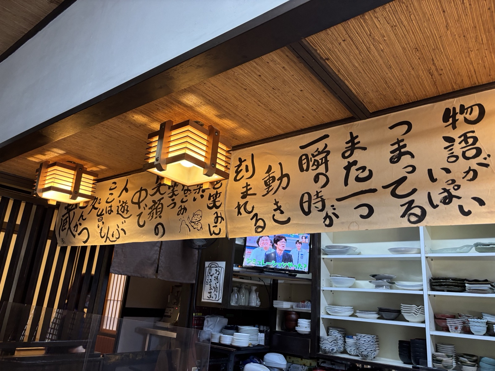
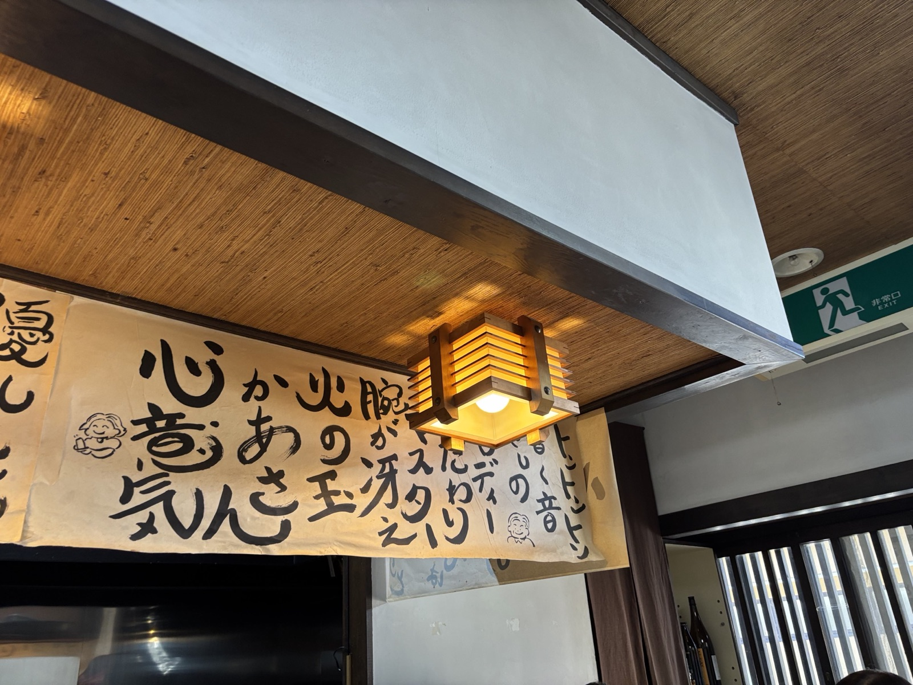
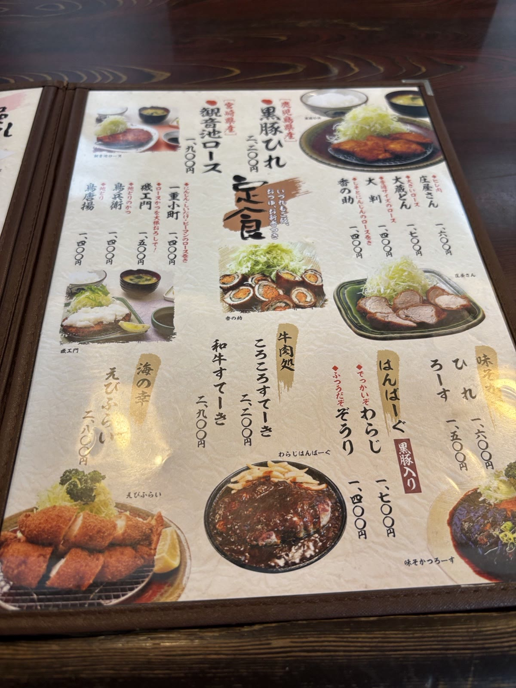
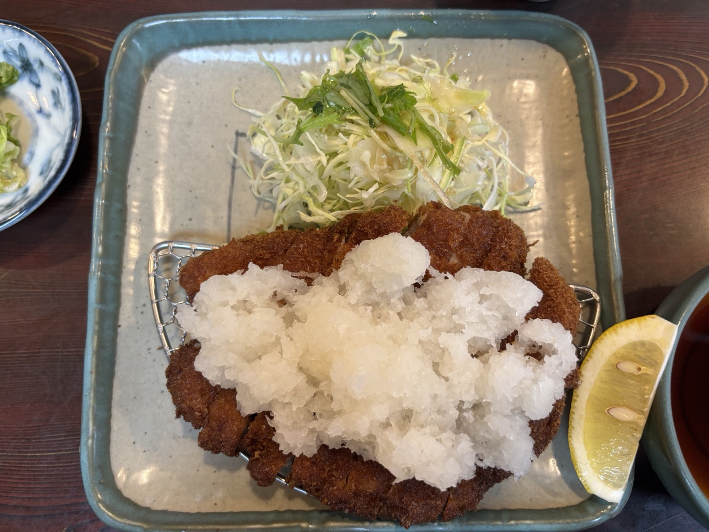
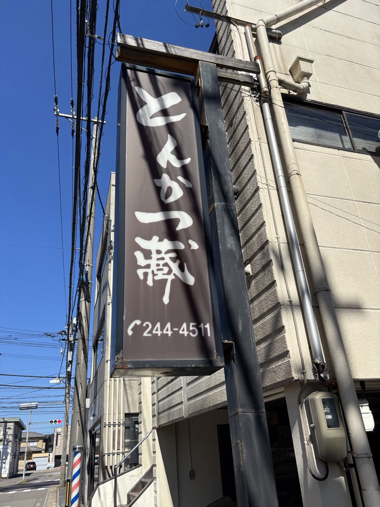
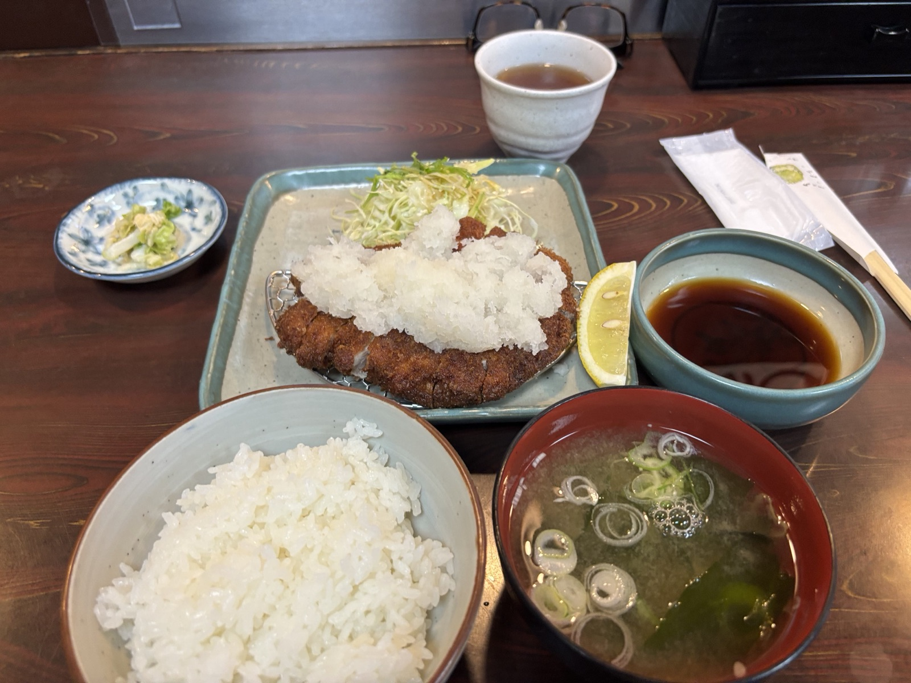
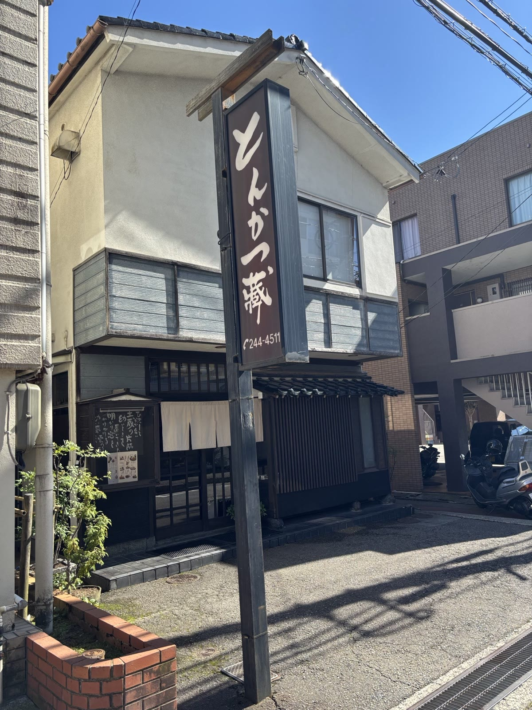

金沢・伏見新町手書きの言葉に迎えられるとんかつの店


住宅街の一角、縦型の看板を目印にたどり着く「とんかつ蔵」。木の天井と和風の照明に包まれた店内には、力強い筆文字の言葉が掲げられています。
黒豚ひれ、ロース、ハンバーグ、えびふらい、和牛すてーき、名物のクリームコロッケまで。とんかつ専門店ならではの、幅広い洋食メニューが揃います。

※価格は食べログ掲載の情報（税込・2026年10月時点）に基づきます。内容・価格は変更される場合があります。




お支払いは
カード・電子マネー・QRコード決済はご利用いただけません
食べログ掲載情報：tabelog.com